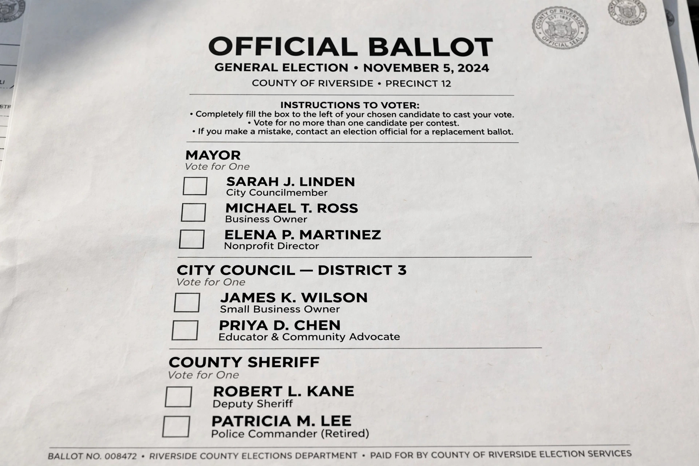

Secret ballot

The secret ballot, also known as the Australian ballot, is a voting method in which a voter's choices are anonymous. Its core features are a uniform ballot paper printed and distributed by the state — rather than by parties or candidates — listing all candidates, which the voter marks in the privacy of a booth and deposits in a sealed ballot box.
History
Before secret ballots, voting was typically public: voters declared their choice aloud or handed in distinctly coloured party tickets, exposing them to bribery, employer pressure and landlord intimidation. The Australian colonies of Victoria and South Australia introduced the state-printed secret ballot in 1856. Britain followed with the Ballot Act 1872 — secrecy had been one of the six demands of the Chartists — and most US states adopted the "Australian ballot" between 1888 and 1896, beginning with Louisville, Kentucky, and Massachusetts.
Effects
By making votes unverifiable, the secret ballot undermines vote buying and coercion: a payer cannot confirm that a voter kept the bargain. Historians also associate it with a decline in treating and election-day violence, and with shifts in campaign spending toward persuasion and advertising.
Modern issues
Postal voting, ballot selfies and compulsory marking assistance raise new tensions with secrecy. Some jurisdictions ban photography in polling stations to preserve it; others have seen the practice protected as free speech.
See also: Voting rights, Ballot box, Voting machine.